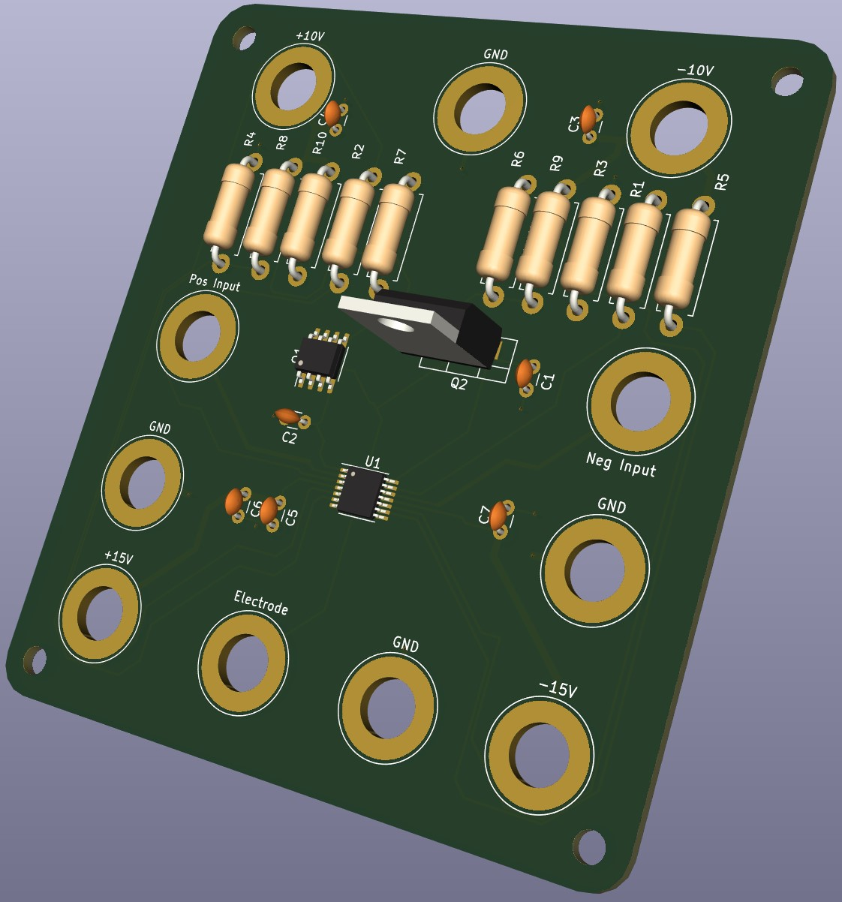
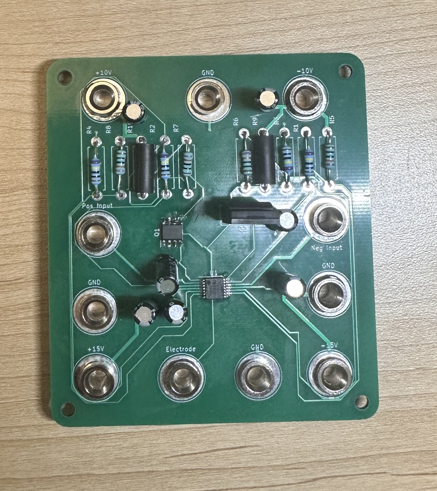

I began this project by designing the circuit on LTSpice. Then, I simulated the circuit to test for the desired output. In the image to the left, I succesfully simulated three periods of 0.1 seconds of 4.9 milli-Amp stimulation and 0.3 seconds of -1.63 milli-Amps. A key design aspect of this project is mainting a net-charge depostion of 0. Thus, the area under the curve for the graph on the left is 0. Also, it is important that the positvely stimulation occurs quicker than the negative stimulation.
Neuromodulation Circuit
Introduction
In this project, I am developing a circuit to stimulate current across the optic nerve of a rat to aid in optic nerve degeneration research at Keck School of Medicine. The goal for this project is to create a programmable board that can stimulate up to 5 milli-Amps across the optic nerve of rat. To prevent nerve damage, I designed a positive and negative interface, which removes the deposited charge.
Project
After simulating the circuit, I was ready to began fabricating my board. Using KiCAD, I designed the schematic and footprint for the board. Then, I sent the necessary files to the manufacturer.

3D Model of the PCB from KiCAD

Soldered Circuit Board
Once my PCB and its parts arrived, I began soldering. The 14-pin IC was difficult to solder due to its size. I began by soldering diagonal end pins, and then using flux and dragging the iron with solder on its tip across the rest of the pins.
With version 1 of my board complete, I look foward to making modifications in version 2. These modifications include interfacing the stimulation with a microcontroller, and using boost converters paired with the voltage output of the microcontroller to source the power.